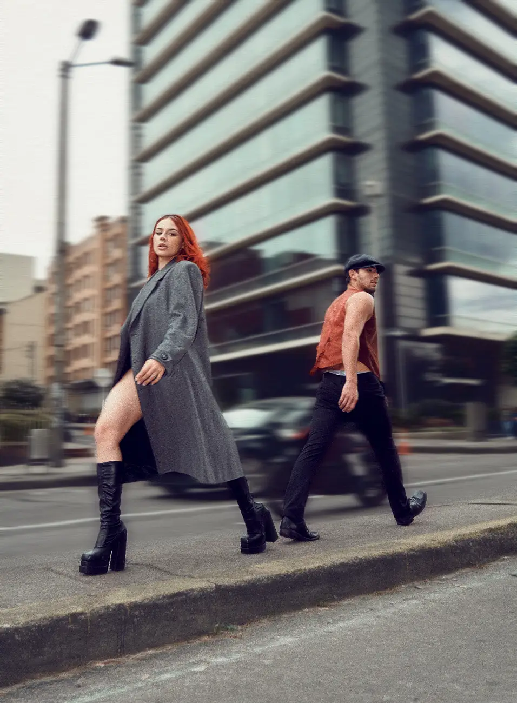
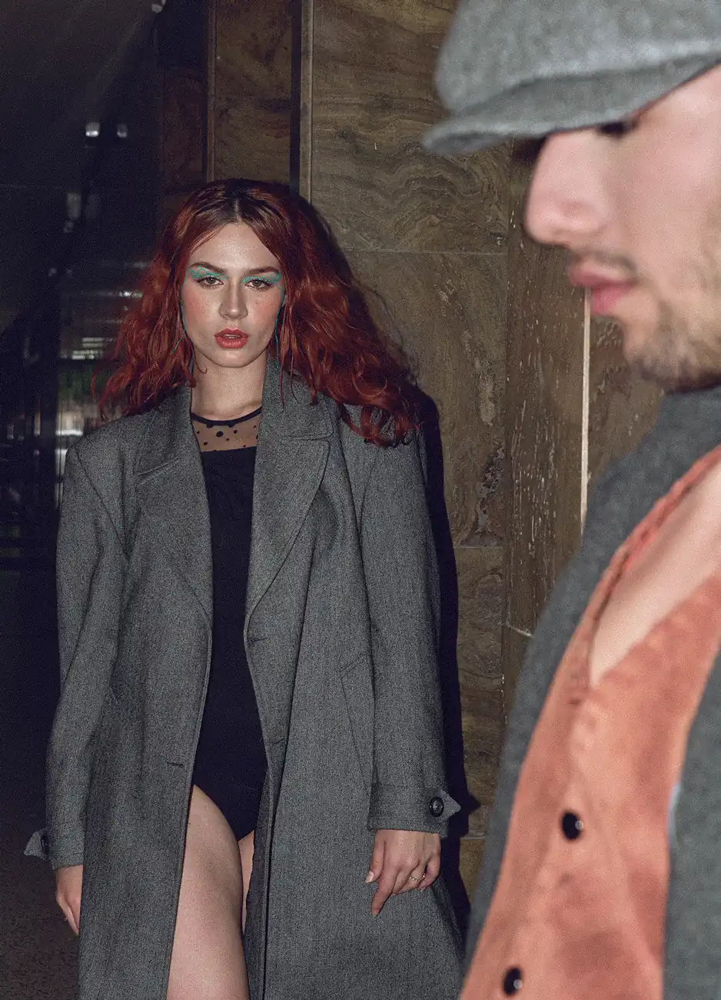
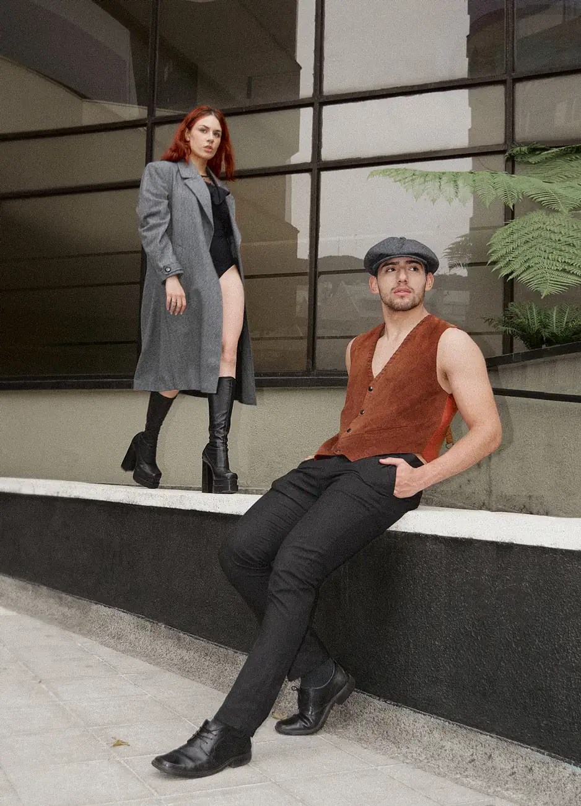
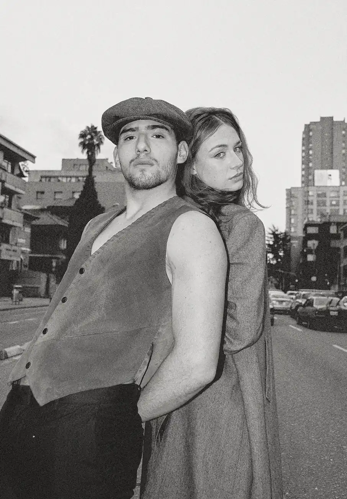
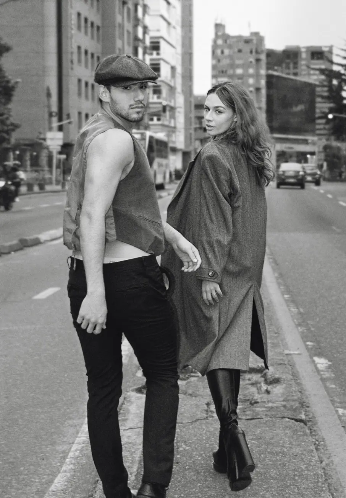
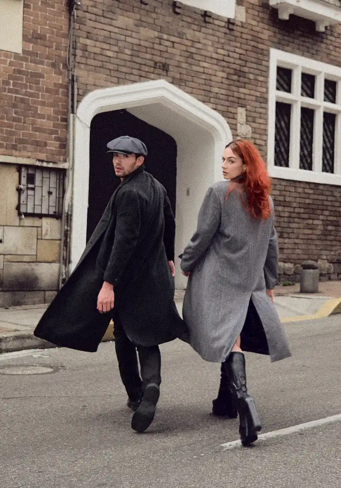
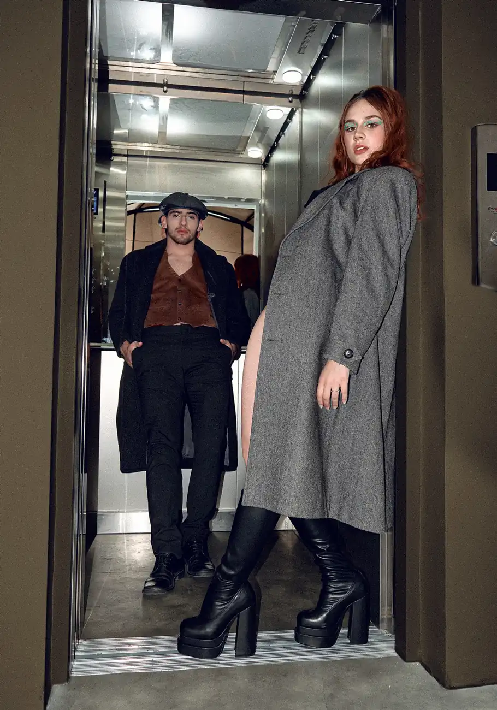
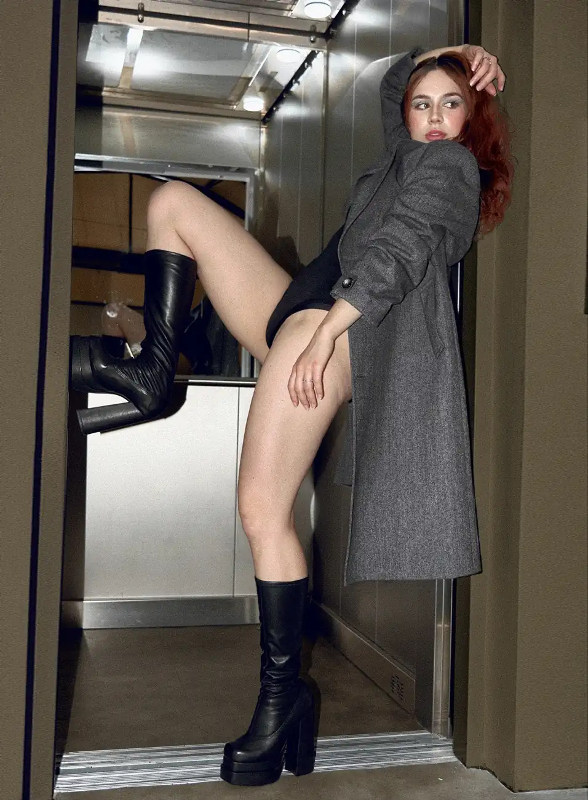

Lumora
A soft glow between two souls
PORTFOLIO
EDITORIAL
Lumora explores connection through light and presence — where intimacy, contrast and emotion quietly unfold
MODEL: Alejandra González
MODEL: Julian Olaya
MUA: Shery






